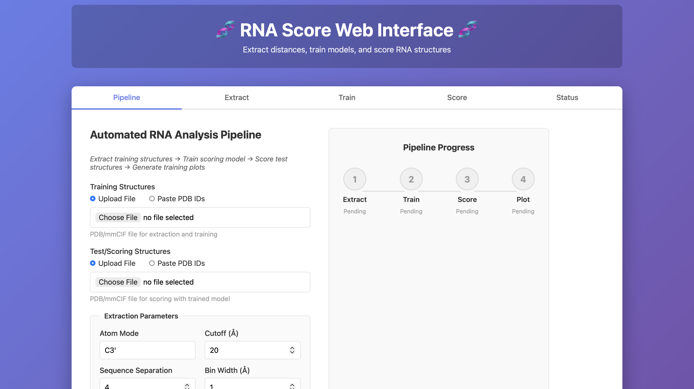
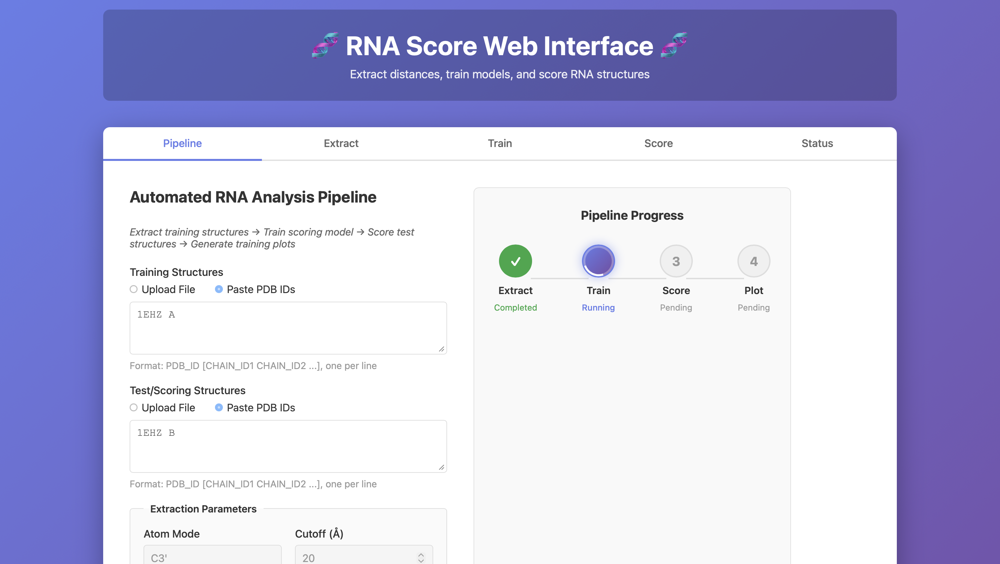
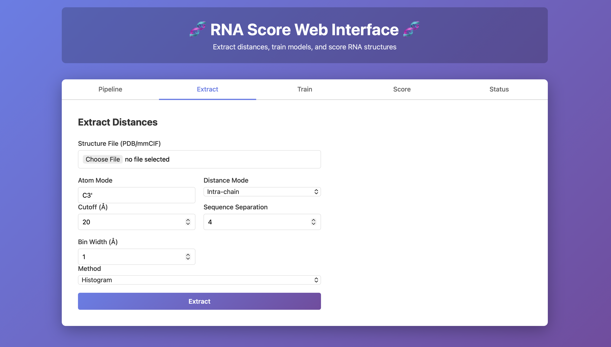
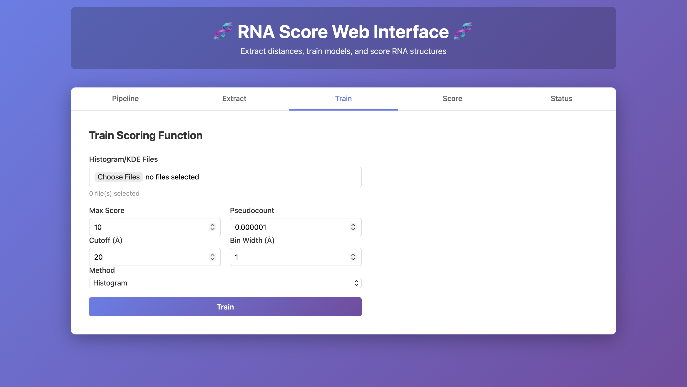
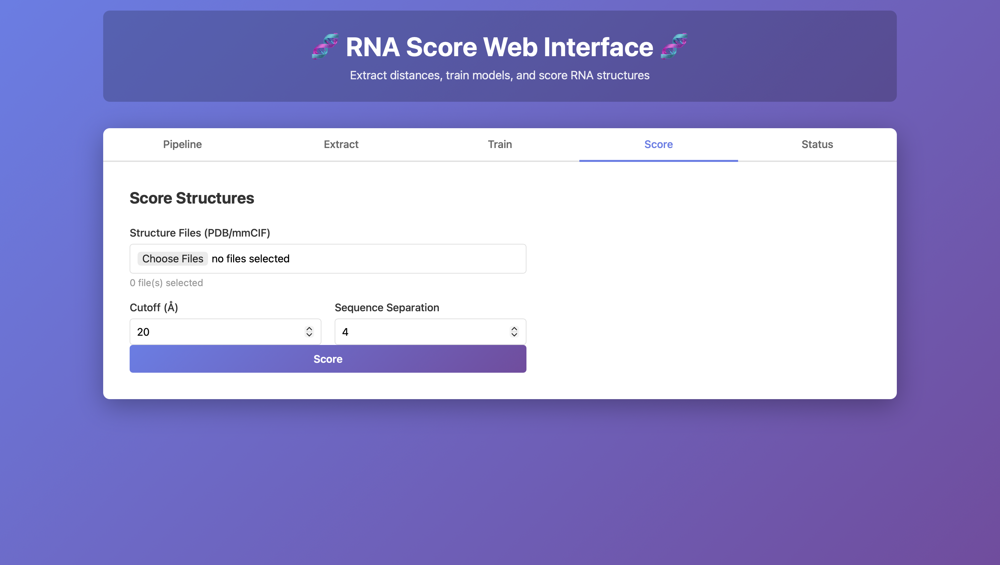
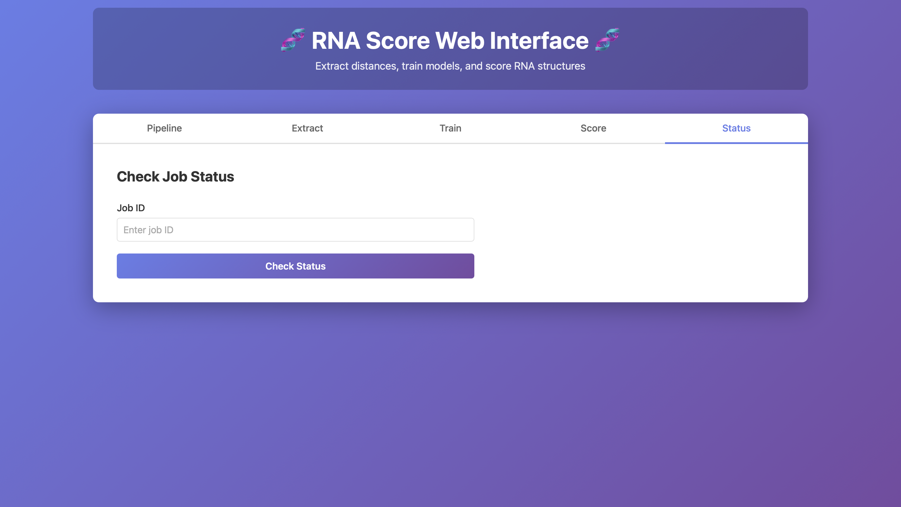

Web Tool (Hosted Interface)#
This web interface is the easiest way to run the RNA Score workflow without installing anything locally. It provides two ways to operate:
Pipeline tab: run the full workflow end-to-end in one go (recommended).
Extract / Train / Score tabs: run each stage manually if you want to reuse intermediate files or debug a specific step.
Status tab: recover progress and outputs using a Job ID (useful for long jobs or after refreshing the page).
This page focuses on how to operate the website (inputs, parameters, outputs, and troubleshooting). The scientific rationale is described in the Background section.
Quick start (recommended)#

Go to Pipeline.
Provide Training Structures (native/reference set).
Provide Test/Scoring Structures (structures you want to evaluate).
Leave defaults (or adjust cutoff/atom/separation if you know why).
Click Run Pipeline.
Download outputs from the results page (scores + full artifact bundle).
Pipeline tab (end-to-end workflow)#
The Pipeline tab runs:
Extract distances from the training set
Train a model from those distances
Score the test structures
(Optional) Plot summaries
Inputs: training vs test structures#
You must provide two structure lists:
Training Structures#
Used only to learn distributions / build the scoring model.
Test / Scoring Structures#
Evaluated with the trained model.
Each input supports:
Upload File (PDB/mmCIF file(s))
Paste PDB IDs (one per line, optionally with chain IDs)
Paste format
PDB_IDPDB_ID CHAINPDB_ID CHAIN1 CHAIN2 ...
Example:
1EHZ A1EHZ B
Parameters (what they control)#
These settings affect both runtime and what gets measured.
Atom mode: nucleotide representative atom (e.g.,
C3').
If a structure lacks that atom (missing residues/atoms), fewer contacts will be extracted.Cutoff (Å): maximum distance retained.
Larger cutoff → more pairs → slower extraction/scoring and larger outputs.Sequence separation: minimum |i−j| along the sequence to keep.
Larger separation → fewer local neighbors → faster runs and fewer trivial contacts.Bin width (Å): discretization resolution.
Smaller bin width → finer bins → potentially noisier tables unless you have lots of data.
Keep parameters consistent across runs if you want scores to be comparable.
Progress tracker and what to expect#

The progress card shows the current stage:
Extract: parses structures, extracts distance pairs, writes extracted artifacts.
Train: generates frequency and score tables from extracted artifacts.
Score: evaluates test structures and produces
scores.csv.Plot: produces optional plots (if enabled in your deployment).
If you refresh the page mid-run, recover the job using the Status tab (see below).
Results and downloads#
Insert screenshot: Results table + Download link
Insert screenshot: All Output Files panel
Once complete, you can download:
Detailed scores (
scores.csv): final outputs for the test set.All Output Files: the full reproducible bundle (training tables, metadata, extracted files, plots if any).
A typical bundle includes:
training_output/freq_*.csvtraining_output/score_*.csvtraining_output/metadata.jsonextracted distributions under
extracted/scores.csvfor the scored structures
Extract tab (manual step 1)#

Use this tab when you want to generate extraction artifacts once and reuse them.
How to use#
Upload a Structure File (PDB/mmCIF).
Set:
Atom Mode
Distance Mode (e.g., intra-chain)
Cutoff (Å)
Sequence Separation
Bin Width (Å)
Method (usually Histogram)
Click Extract.
Output#
This produces the histogram/KDE-like files that you later select in the Train tab.
Operational notes#
If extraction outputs are unexpectedly small or empty, the most common causes are missing atoms/residues, wrong chain selection, or overly strict cutoff/separation.
Increasing cutoff increases runtime quickly (number of pairs grows fast).
Train tab (manual step 2)#

Use this tab when you already have extracted histogram/KDE files and want to generate the scoring tables.
How to use#
Select Histogram/KDE Files (from a previous Extract or Pipeline run).
Configure:
Max Score: clamps extreme values; helps stability.
Pseudocount: prevents zeros; helps avoid undefined values.
Cutoff (Å), Bin Width (Å): must match the extracted file bins.
Method: Histogram (or KDE if supported).
Click Train.
Output#
freq_*.csvfrequency tablesscore_*.csvscoring tablesmetadata.jsonwith the training settings
Operational notes#
A mismatch between extraction bin width/cutoff and training settings is a common source of “weird” or inconsistent scores later.
If you change parameters, treat the resulting model as a different model (do not compare scores across different parameter sets).
Score tab (manual step 3)#

Use this tab when you already trained a model and want to score additional structures.
How to use#
Upload Structure Files (PDB/mmCIF).
Set Cutoff (Å) and Sequence Separation (should match the model assumptions).
Click Score.
Output#
The scoring step produces a scores.csv (and often per-contact breakdown tables) that can be downloaded from the results view.
Operational notes#
Scores are only comparable when produced using the same trained model (same extraction/training parameters and training set).
If scoring is slow, reduce cutoff or increase sequence separation.
Status tab (monitoring, recovery, debugging)#

The interface runs jobs asynchronously. The Status tab allows you to query a run after navigation or refresh.
How to use#
Paste the Job ID you received when starting a run.
Click Check Status.
What to use it for#
Recover progress if the page reloads.
Retrieve error messages if a run fails.
Confirm completion before downloading outputs.